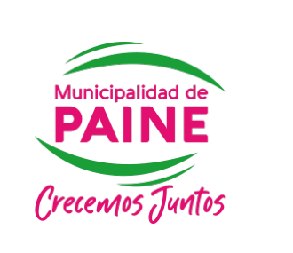

Descubre Paine · Visor Turístico Municipal
El paisaje, su gente y sus caminos cuentan historias
☰ Recorrer
◫ Capas
Preparando el mapa y las fichas de atractivos. Selecciona un punto para ver su fotografía, relato y enlaces.